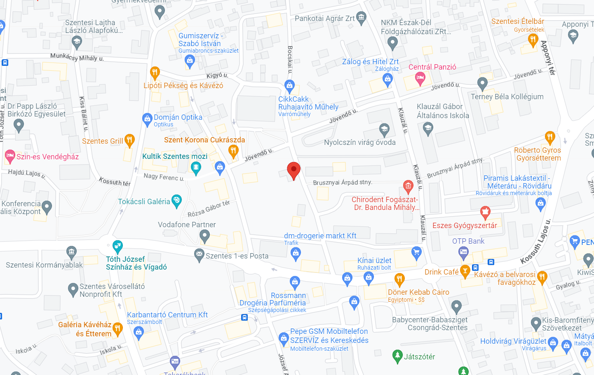

- Cím:
6600 Szentes Bocskai u 9. - Mobil:
+36 30 633 2900 - E-mail:
info@szentesivadvedelem.hu - Nyitvatartás:
Hétfő 10:00–17:00
Kedd 10:00–17:00
Szerda 10:00–17:00
Csütörtök 10:00–17:00
Péntek 10:00–17:00
Szombat 10:00–12:00
Vasárnap 10:00–12:00 - 0-24 órás ügyelet!
Kapcsolat
